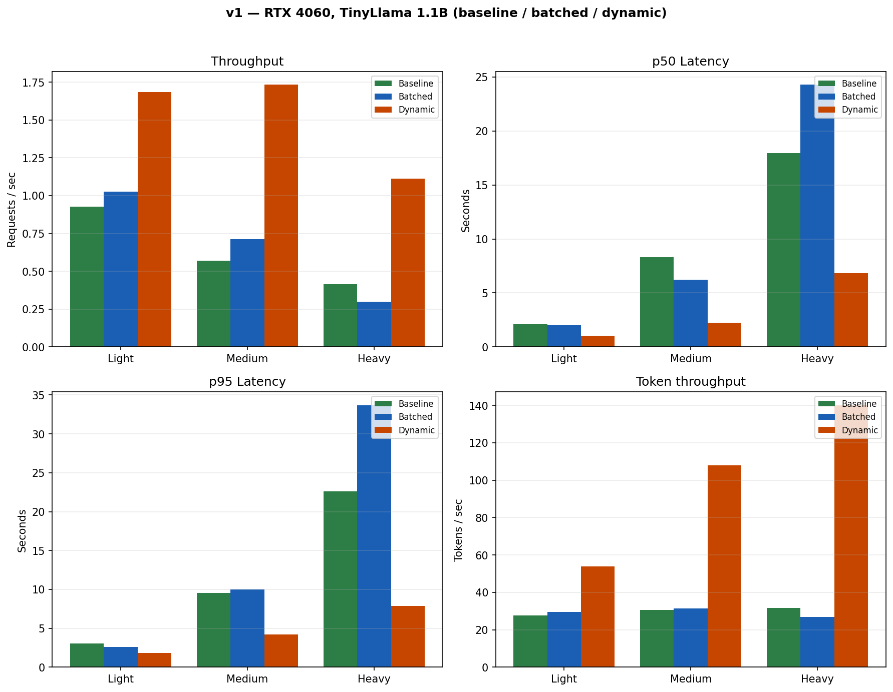
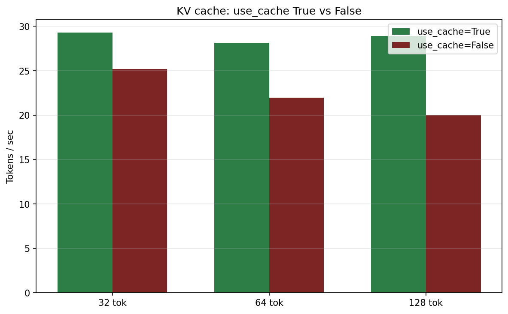

TinyLlama-1.1B, NVIDIA RTX 4060 Laptop GPU (8 GB). Light / medium / heavy loads.

Generated by python report/generate_charts.py from results/load_*.json.

From results/kv_cache_*.json. Cache on = higher tok/s.
| Metric | Baseline | Batched | Dynamic |
|---|---|---|---|
| Req/s | 0.93 | 1.03 | 1.69 |
| p50 (s) | 2.09 | 2.02 | 1.02 |
| Tok/s | 27.7 | 29.6 | 53.9 |
| Metric | Baseline | Batched | Dynamic |
|---|---|---|---|
| Req/s | 0.57 | 0.71 | 1.73 |
| p50 (s) | 8.32 | 6.21 | 2.23 |
| Tok/s | 30.6 | 31.4 | 107.9 |
| Metric | Baseline | Batched | Dynamic |
|---|---|---|---|
| Req/s | 0.41 | 0.30 | 1.11 |
| p50 (s) | 17.96 | 24.28 | 6.83 |
| Tok/s | 31.8 | 27.0 | 140.2 |
| Setting | 32 tok | 64 tok | 128 tok |
|---|---|---|---|
| use_cache=True | 29.3 | 28.1 | 28.9 |
| use_cache=False | 25.2 | 22.0 | 20.0 |